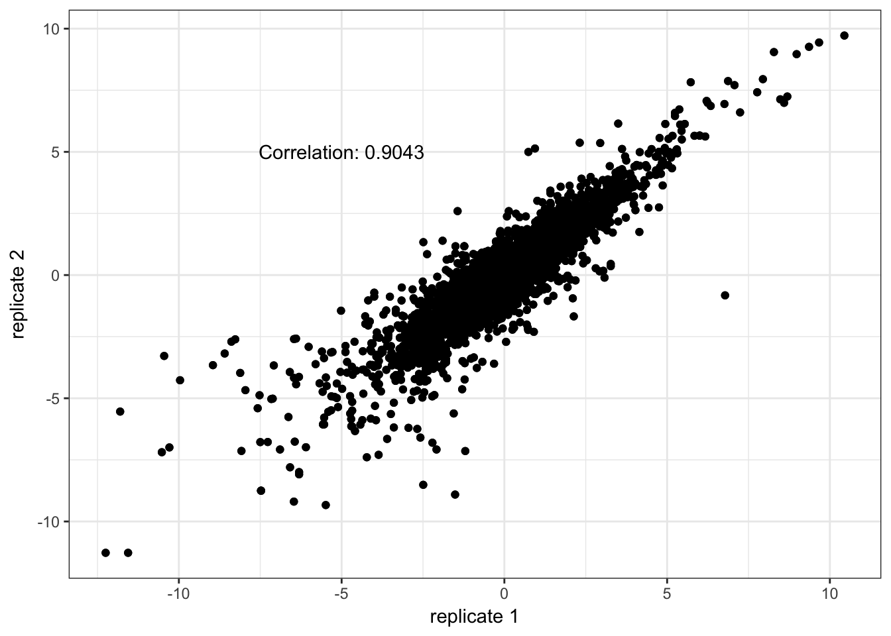

Proteogenomic data processing
Christopher Conley, Pei Wang, Jie Peng
2017-05-12
Introduction
Integrative genomic data is not always available in a standard format and often requires some level of data cleaning and bioinformatic processing. The BCPLS data is no exception, which requires multiple pre-processing steps prior to learning the network and interpreting it. It is imperative to maintain the integrity of the Breast Cancer Proteogenomics Landscape Study (BCPLS) data through a transparent outline of every pre-processing step. Dimension reduction, missing value imputation, and reducing multi-colinearity, are specifically highlighted.
This document serves as an example on how one might organize annotations and high-dimensional omic data prior to leveraging the spacemap R package for network learning. We show how to construct Bioconductor’s BioBase::ExpressionSet data structure for the various omic data profiles (e.g. CNA,RNA,protein). The ExpressionSet data structure is part of the best practices of the Bioconductor community because it binds experimental metadata and biological annotations to the omic profiles. The annotations are formatted specifically for the spaceMap network analysis toolkit.
Note: the initial data files are not included in the neta-bcpls repository to keep it as light-weight as possible in terms of file sizes. If interested in reproducing this analysis with the initial data files, please contact the authors of spaceMap.
Proteogenomic Data Provenance
We process 105 breast tumour samples that are sourced from a collaboration between The Cancer Genome Atlas (TCGA) and the Clinical Proteomics Tumor Analysis Consortium (CPTAC). Assays on these 105 samples generated protein quantification, mRNA expression, and copy number alteration (CNA) forming a framework for proteogenomic analysis. Protein abundance profiles were downloaded from the supplementary table of Breast Cancer Proteogenomics Landscape Study, Nature 2016 (BCPLS). The protein identification and quantitation data had been previously processed according to the Common Data Analysis Pipeline associated with CPTAC. The RNA-seq gene expression data set was pre-processed by Michael Gatza, an author of BCPLS, where data has been normalized, log transformed, median centered, and filtered to contain only those genes present in >80% of samples. The CNA gains and losses from the aCGH data were previously called by the ‘Fixed-order clustering’ algorithm from Pei Wang’s group.
There are 108 samples of breast cancer tumours, 3 of which are not included because they were normal controls. The meta-data associated with the CPTAC experiment is listed in the following data.frame:
basedir <- "~/scratch-data//neta-bccptac/data/"
clin <- read.csv(file = file.path(basedir,"tumor-metadata.csv"), header = TRUE)
kable(head(clin))| Sample | iTRAQ.Experiment.number | PAM50 | ER.Status | PR.Status | HER2.Status |
|---|---|---|---|---|---|
| C8-A131 | 1 | Basal | Negative | Negative | Negative |
| BH-A18Q | 2 | Basal | Negative | Negative | Negative |
| BH-A0AV | 5 | Basal | Negative | Negative | Negative |
| A2-A0D0 | 6 | Basal | Negative | Negative | Negative |
| A2-A0CM | 7 | Basal | Negative | Negative | Negative |
| AR-A0U4 | 9 | Basal | Negative | Negative | Negative |
RNA data processing
Read in the RNA-seq expression data and the gene-level copy number variation (CNV) data. Although we will not use the gene-level CNV data, it is helpful for identifying sample names.
rna <- read.delim(file = file.path(basedir, "rna-seq-data-v1.txt"), header = TRUE, sep = "\t")
cnv <- read.delim(file = file.path(basedir, "CNA-data-v1.txt"), header = TRUE, sep = "\t")Keep only 77 high quality samples
There are only 77 high quality samples from the protein quantitation assays, which requires us to subset from the 105 RNA-seq assays. The high quality sample IDs are contained in Pei Wang’s clustering of the aCGH data. Load this analysis in preparation to extract out the high quality sample IDs.
pwf <- new.env()
load(file = file.path(basedir, "cnv.data.80.RData"), envir = pwf)In order to reformat the RNA-seq raw data to contain only 77 samples of sufficiently high quality, we must find the high quality sample identifier, which is only a substring contained within of the column names of Pei’s aCGH analysis. Create an ID map to extract the high quality samples.
#drop the control, normal sample ids
idMap <- data.frame(sampleID = clin$Sample[-c(106,107, 108)])
#obtain the abbreviated sample ids
idMap$rnaOrder <- sub(pattern = ".", replacement = "-", fixed = TRUE,
x = substr(x = colnames(rna)[2:length(colnames(rna))],
start = 6, stop = 12))
#indicate which column indices
idMap$rnaIndex <- 2:length(colnames(rna))
idMap$cnvOrder <- sub(pattern = ".", replacement = "-", fixed = TRUE,
x = substr(x = colnames(cnv)[4:length(colnames(cnv))],
start = 6, stop = 12))
idMap$cnvIndex <- 4:length(colnames(cnv))
#assure sample columns for rna, cnv are the same order
stopifnot(identical(idMap$rnaOrder, idMap$cnvOrder))
#assure unique abreviated sample ids before using grep
stopifnot(!anyDuplicated(idMap$rnaOrder))
stopifnot(!anyDuplicated(pwf$cnv.part))
idMap$highQual <- FALSE
highQualIndex <- sapply(pwf$cnv.part, function(x) {
idx <- grep(x, idMap$rnaOrder)
if (length(idx))
return(idx)
else
return(NA)
})
# make sure no high quality samples are missing from search
stopifnot(!any(is.na(highQualIndex)))
idMap$highQual[highQualIndex] <- TRUEAfter some processing, we have a data.frame indicating unique sample ID’s, the index in which they appear in the rna and cnv variangles, as well as a logical indicating high quality samples.
kable(head(idMap))| sampleID | rnaOrder | rnaIndex | cnvOrder | cnvIndex | highQual |
|---|---|---|---|---|---|
| C8-A131 | A2-A0CM | 2 | A2-A0CM | 4 | TRUE |
| BH-A18Q | A2-A0D0 | 3 | A2-A0D0 | 5 | FALSE |
| BH-A0AV | A2-A0D1 | 4 | A2-A0D1 | 6 | FALSE |
| A2-A0D0 | A2-A0D2 | 5 | A2-A0D2 | 7 | TRUE |
| A2-A0CM | A2-A0EQ | 6 | A2-A0EQ | 8 | TRUE |
| AR-A0U4 | A2-A0EV | 7 | A2-A0EV | 9 | TRUE |
Record the high quality clinical information with samples sorted in the same order as the RNA samples.
clin.hq <- clin[match(idMap$rnaOrder[idMap$highQual], clin$Sample),]Subset the high quality samples for further processing.
rna.hq <- as.matrix(rna[,idMap$rnaIndex[idMap$highQual]])
cnv.hq <- as.matrix(cnv[,idMap$cnvIndex[idMap$highQual]])
rownames(cnv.hq) <- cnv$Gene.Symbol
rownames(rna.hq) <- rna$CLIDInspect gene identifiers.
The gene symbols are not entirely unique, 12 of them having duplicates.
symbol <- unlist(lapply(strsplit(x = as.character(rna$CLID), split = "|", fixed = TRUE), function(x) x[1]))
dupSymbolIndex <- duplicated(symbol)
sum(dupSymbolIndex)## [1] 12The entrez gene identifiers are unique. We will use entrez gene IDs as the accession number in downstream applications and the gene symbols will be useful to retain for network visualizations.
entrezgene <- unlist(lapply(strsplit(x = as.character(rna$CLID), split = "|", fixed = TRUE), function(x) x[2]))
dupEntrezGeneIndex <- duplicated(entrezgene)
sum(dupEntrezGeneIndex)## [1] 0Filter RNA-seq expression with high missing value rates
Remove genes that exceed 30% of samples with missing values.
library(ggplot2)
gnumNA <- sapply(seq_len(nrow(rna.hq)), function(i) sum(is.na(rna.hq[i,])))
missingRateThresh <- 0.30
qplot(gnumNA / ncol(rna.hq)*100, geom = "bar") + xlab("% missing samples per gene")No gene needs to be filtered out on this criteria. In fact, the degree of missingness is low in the CPTAC RNA-seq dataset. In future processing of the data, missing values will be imputed with mean zero after standardization.
stopifnot(!any(gnumNA > missingRateThresh*ncol(rna.hq)))Keep high variance genes for network analysis
Limited sample size, high biological heterogeneity, amd computational limits of spaceMap are compelling reasons to filter out genes that do not exhibit high dispersion across the samples. Restrict the analysis to mRNA that exceed the 90th percentile in standard deviation.
rna.sd <- apply(rna.hq, MARGIN = 1, FUN = sd, na.rm = TRUE)
keepRNAIndex <- rna.sd > quantile(x = rna.sd, probs = 0.90)Include some cis genes that are positive controls of the 17q12 amplicon that may not have passed the high variance filter.
rna_entrez <- unlist(lapply(strsplit(x = as.character(rownames(rna.hq)), split = "|", fixed = TRUE), function(x) x[2]))
rna_symbol <- unlist(lapply(strsplit(x = as.character(rownames(rna.hq)), split = "|", fixed = TRUE), function(x) x[1]))
rna_symbol <- ifelse(rna_symbol == "?", rna_entrez, rna_symbol)
pc_index <- match(c("ERBB2", "ERBB4", "GRB7", "KRT17", "KRT19", "PNMT"), rna_symbol)
final_keep_rna_index <- sort(union(pc_index, which(keepRNAIndex)))
rnatofit <- rna.hq[final_keep_rna_index,]The total number of mRNA expression considered for this analysis is 1657. Mean-center mRNA features and scale by the standard deviation. Follow this action by imputing mean-zero for missing values.
#transpose to be n x p dimension
rnatofit_t <- t(rnatofit)
#standardize features
rnatofit_t <- scale(rnatofit_t)
#zero-mean imputation for mRNA
rnatofit_t[is.na(rnatofit_t)] <- 0
rnatofit_std <- t(rnatofit_t)Form an BioBase::ExpressionSet for mRNA data.
Associate the correct sample meta data from TCGA with the mRNA expression data.
ltcga_data <- strsplit(x = colnames(rnatofit_std), split = ".", fixed = T)
tcga_vars <- c("Project", "Location", "Study_Participant", "Sample_Type", "Portion", "Plate_Order", "Center")
ltcga_data2 <- lapply(ltcga_data, function(l) {
names(l) <- tcga_vars
as.data.frame(t(data.frame(l)))
})
suppressPackageStartupMessages(library(data.table))
tcga_sample_info <- rbindlist(ltcga_data2)
kable(head(tcga_sample_info))| Project | Location | Study_Participant | Sample_Type | Portion | Plate_Order | Center |
|---|---|---|---|---|---|---|
| TCGA | A2 | A0CM | 01A | 31R | A034 | 07 |
| TCGA | A2 | A0D2 | 01A | 21R | A034 | 07 |
| TCGA | A2 | A0EQ | 01A | 11R | A034 | 07 |
| TCGA | A2 | A0EV | 01A | 11R | A034 | 07 |
| TCGA | A2 | A0EX | 01A | 21R | A034 | 07 |
| TCGA | A2 | A0EY | 01A | 11R | A034 | 07 |
Combine this information with other clinical features previously imported.
pheno_data <- cbind(clin.hq, tcga_sample_info)
#simplify sample id now that we have extracted the information encoded therein (see previous block)
colnames(rnatofit_std) <- clin.hq$Sample
row.names(pheno_data) <- colnames(rnatofit_std)Provide additional information on the sample covariates in the form of meta data.
suppressPackageStartupMessages(library(Biobase))
meta_data <- data.frame(labelDescription = c("Tissue Location - Study Participant",
"iTRAC experiment number",
"50 genes used to classify breast cancer subtypes",
"Estrogen Receptor Status",
"Progesterone Receptor Status",
"HER2 Subtype",
"Project",
"Location where the samples and the clincal metadata were collected",
"Study Participant",
"Sample and vial (01 = solid tumor, A = The first vial in a sequence of samples)",
"order of portion in a sequence of 100 - 120 mg samples",
"order of plate in a sequence of 96-well plates",
"Center that will receive the sample"),
row.names = colnames(pheno_data))
pheno_data <- new("AnnotatedDataFrame",
data=pheno_data, varMetadata=meta_data)
pheno_data## An object of class 'AnnotatedDataFrame'
## rowNames: A2-A0CM A2-A0D2 ... E2-A15A (77 total)
## varLabels: Sample iTRAQ.Experiment.number ... Center (13 total)
## varMetadata: labelDescriptionAnnotate mRNA features.
Identify the entrez gene and symbol features in the data. If a symbol is missing, replace it with its entrez gene id.
rna_entrez <- unlist(lapply(strsplit(x = as.character(rownames(rnatofit_std)), split = "|", fixed = TRUE), function(x) x[2]))
rna_symbol <- unlist(lapply(strsplit(x = as.character(rownames(rnatofit_std)), split = "|", fixed = TRUE), function(x) x[1]))
rna_symbol <- ifelse(rna_symbol == "?", rna_entrez, rna_symbol)Import the Bioconductor package org.Hs.eg.db regarding the homo sapien annotation. Prepare a function to extract mapped key values from entrez id features in the requested database.
suppressPackageStartupMessages(library(org.Hs.eg.db))
hs_feature_list <- function(db, eg) {
mk <- mappedkeys(db)
xx <- as.list(db[eg[eg %in% mk]])
}Extract the chromosome, first start and last stop coordinates, as well as the strand of the mRNA features. Maintain these attributes in list format since some of the genes do not have complete information on the attributes (e.g. strand information missing).
start_chrloc <- hs_feature_list(org.Hs.egCHRLOC, rna_entrez)
rna_preattr <- list(chr = unlist(hs_feature_list(org.Hs.egCHR, rna_entrez)),
start = sapply( hs_feature_list(org.Hs.egCHRLOC, rna_entrez), function(x) min(abs(x))),
end = sapply(hs_feature_list(org.Hs.egCHRLOCEND, rna_entrez), function(x) max(abs(x))),
strand = ifelse(sapply(start_chrloc, function(x) sign(min(x))) == 1L, "+", "-"))Reformat the list into a data.frame that can be stored in an Biobase::ExpressionSet object.
suppressPackageStartupMessages(library(foreach))
lrna_node_atttributes <- foreach(id = rna_entrez, sym = rna_symbol) %do% {
id_attr <- sapply(rna_preattr, function(a) {
b <- a[names(a) %in% id]
ifelse(length(b), b, NA)
})
names(id_attr) <- names(rna_preattr)
id_attr_df <- as.data.frame(t(data.frame(id_attr)), stringsAsFactors = F, row.names = "")
id_attr_df$start <- as.integer(id_attr_df$start)
id_attr_df$end <- as.integer(id_attr_df$end)
id_attr_df$id <- id
id_attr_df$symbol <- sym
id_attr_df$cyto <- NA
id_attr_df$type <- "y"
id_attr_df$cytoscape <- sym
id_attr_df$chr <- paste0("chr", id_attr_df$chr)
id_attr_df[,c(5,1,2,3,6,7,4,8,9)]
}
rna_node_attributes <- as.data.frame(rbindlist(lrna_node_atttributes))
rownames(rna_node_attributes) <- rna_node_attributes$id
rna_node_attributes <- rna_node_attributes[,c(1,5,2,3,4,7)]
rna_node_attributes$start <- as.integer(rna_node_attributes$start)
rna_node_attributes$end <- as.integer(rna_node_attributes$end)
names(rna_node_attributes)[1] <- "id"
names(rna_node_attributes)[2] <- "alias"
kable(head(rna_node_attributes), row.names = F)| id | alias | chr | start | end | strand |
|---|---|---|---|---|---|
| 143941 | TTC36 | chr11 | 118527494 | 118531025 | + |
| 54596 | L1TD1 | chr1 | 62194801 | 62212328 | + |
| 2151 | F2RL2 | chr5 | 76615481 | 76623434 | - |
| 23017 | FAIM2 | chr12 | 49866895 | 49903977 | - |
| 9856 | KIAA0319 | chr6 | 24544103 | 24646155 | - |
| 164284 | APCDD1L | chr20 | 58459100 | 58514938 | - |
Create the final mRNA ExpressionSet object.
#subset high quality samples
idMapHq <- idMap[idMap$highQual,]
#assure sample order correct
stopifnot(identical(as.character(clin.hq$Sample), idMapHq$rnaOrder),
identical(as.character(clin.hq$Sample), idMapHq$cnvOrder))
suppressPackageStartupMessages(library(Biobase))
rownames(rnatofit_std) <- rownames(rna_node_attributes)
rnaset <- ExpressionSet(assayData = rnatofit_std,
phenoData = pheno_data,
featureData = AnnotatedDataFrame(data = rna_node_attributes))
rnaset## ExpressionSet (storageMode: lockedEnvironment)
## assayData: 1657 features, 77 samples
## element names: exprs
## protocolData: none
## phenoData
## sampleNames: A2-A0CM A2-A0D2 ... E2-A15A (77 total)
## varLabels: Sample iTRAQ.Experiment.number ... Center (13 total)
## varMetadata: labelDescription
## featureData
## featureNames: 143941 54596 ... 9760 (1657 total)
## fvarLabels: id alias ... strand (6 total)
## fvarMetadata: labelDescription
## experimentData: use 'experimentData(object)'
## Annotation:Protein Quantitation Processing
The protein quantitation data contains the 77 high quality samples plus a few normal tissue samples. The data has been normalized and missing data has been filtered away previously. Read in the data.
prot <- read.delim(file = file.path(basedir, "proteome-ratio-norm-noNA-unimodal-edit-header.gct"), header = TRUE, sep = "\t")
#exclude 3 normal control samples
prot <- prot[,-c((ncol(prot) - 2):ncol(prot))]Reformat the sample-level ids from the protein file to match that found in the clinical meta data file.
pid <- gsub(pattern = ".", replacement = "-", fixed = TRUE,
x = substr(x = colnames(prot)[3:length(colnames(prot))],
start = 1, stop = 7))
head(pid)## [1] "AO-A12D" "C8-A131" "AO-A12B" "BH-A18Q" "C8-A130" "C8-A138"Duplicate sample IDs exist, which correspond to technical replicates. There are three sample ids with two technical replicates.
dupids <- pid[which(duplicated(pid))]
dupids## [1] "AO-A12D" "C8-A131" "AO-A12B"Identify the technical replicates.
#extract an extended id including the technical replicate id.
pid2 <- gsub(pattern = ".", replacement = "-", fixed = TRUE,
x = substr(x = colnames(prot)[3:length(colnames(prot))], start = 1, stop = 10))
#assure there is not duplicates among extended id
stopifnot(!anyDuplicated(pid2))
techreps <- sapply(dupids, function(di) pid2[grep(di, pid2)])
rownames(techreps) <- paste0("replicate-", 1:2)
kable(techreps)| AO-A12D | C8-A131 | AO-A12B | |
|---|---|---|---|
| replicate-1 | AO-A12D-01 | C8-A131-01 | AO-A12B-01 |
| replicate-2 | AO-A12D-05 | C8-A131-32 | AO-A12B-34 |
Obtain the corresponding technical replicate indices in the extended protein sample ID variable pid2.
trepids <- sapply(dupids, function(pat) grep(pattern = pat, x = pid2))The correlation between technical replicates is sufficiently high. We replace each technical replicate measurements with the average.
tcors <- vector(mode = "numeric", length = 3)
avgtechreps <- matrix(data = NA, nrow = nrow(prot), ncol = 3)
colnames(avgtechreps) <- colnames(trepids)
rownames(avgtechreps) <- rownames(prot)
library(ggplot2)
for(i in 1:3) {
trep <- prot[,trepids[,i] + 2L]
avgtechreps[,i] <- rowMeans(trep)
prot[,trepids[,i] + 2L] <- avgtechreps[,i]
tcors[i] <- cor(trep[,1], trep[,2])
print(qplot(x = trep[,1], y = trep[,2]) + geom_point() +
xlab("replicate 1") + ylab("replicate 2") + theme_bw() +
annotate("text", x = -5, y = 5, label = paste0("Correlation: ", round(tcors[i], 4))))
}
The idMap object contains all 105 sample ids, excluding the 3 control samples, and indicates which is called a sufficiently high quality sample. Subset the 77 high quality samples. Assure the high quality samples agree between protein, CNA and RNA. The order of the samples for proteins does not natively match the RNA and CNA, which will be fixed here.
#remove duplicate protein sample ids
pidnodups <- pid[!duplicated(pid)]
#assure high quality samples agree between protein,rna,cna
stopifnot(!length(setdiff(pidnodups, idMapHq$cnvOrder)))
#change the order of the protein sample columns
idMapHq$protOrder <- pidnodups[match(idMapHq$cnvOrder, pidnodups)]Subset the high quality samples from the original import of the protein quantitation data.
#pid
prot_hq <- prot[,c(1,2, match(idMapHq$protOrder, pid) + 2L)]
#assure ourselves that the sample ids match in the correct order of the protein expression matrix
tmp <- gsub(pattern = ".", replacement = "-", fixed = TRUE,
x = substr(x = colnames(prot_hq)[3:length(colnames(prot_hq))],
start = 1, stop = 7))
stopifnot(identical(tmp, idMapHq$cnvOrder))
stopifnot(identical(tmp, idMapHq$rnaOrder))
stopifnot(identical(tmp, idMapHq$protOrder))
#match the simplified sample names now that we order has been assured.
colnames(prot_hq)[3:length(colnames(prot_hq))] <- tmpFilter out all proteins but those that have variance in the top 20%.
ed <- as.matrix(prot_hq[,3:ncol(prot_hq)])
#initial feature information
fd <- data.frame( RefSeqProteinID = prot_hq[,2], description = prot_hq[,1],
row.names = prot_hq[,2])
protallset <- ExpressionSet(assayData = ed,
phenoData = pheno_data,
featureData = AnnotatedDataFrame(data = fd))
pexp <- exprs(protallset)
#no missing proteins
stopifnot(!any(is.na(pexp)))
sd_pexp <- apply(X = pexp, MARGIN = 1, FUN = sd)
keep_prot_index <- sd_pexp > quantile(x = sd_pexp, probs = 0.80)
protsdf <- protallset[which(keep_prot_index),]
protsdf## ExpressionSet (storageMode: lockedEnvironment)
## assayData: 1595 features, 77 samples
## element names: exprs
## protocolData: none
## phenoData
## sampleNames: A2-A0CM A2-A0D2 ... E2-A15A (77 total)
## varLabels: Sample iTRAQ.Experiment.number ... Center (13 total)
## varMetadata: labelDescription
## featureData
## featureNames: NP_112598 NP_001714 ... NP_997625 (1595 total)
## fvarLabels: RefSeqProteinID description
## fvarMetadata: labelDescription
## experimentData: use 'experimentData(object)'
## Annotation:As seen in the ExpressionSet object, we have filtered out samples and protein features, added the phenotypic data, but have yet to add gene coordinates of the feature level information.
Add gene coordinates of the protein features
Since the phenotypic data for the samples has been prepared earlier, arrange to annotate the protein features.
suppressPackageStartupMessages(library(Biobase))
suppressPackageStartupMessages(library(mygene))
p2r77map <- queryMany(qterms = featureNames(protsdf), scopes = "refseq",
fields = c("entrezgene", "symbol"))## Querying chunk 1## Querying chunk 2## Finished
## Pass returnall=TRUE to return lists of duplicate or missing query terms.p2r77map2 <- data.frame(refseq = p2r77map@listData$query, entrezgene = as.character(p2r77map@listData$entrezgene),
symbol = p2r77map@listData$symbol, stringsAsFactors = FALSE)The RefSeq ID’s of the protein features is non-missing and unique.
stopifnot(!any(is.na(p2r77map2$refseq)))
stopifnot(!any(duplicated(p2r77map2$refseq)))On the other hand, some of the entrez gene ID’s are missing.
missing_entrez_gene_ids <- p2r77map2$refseq[is.na(p2r77map2$entrezgene)]
length(missing_entrez_gene_ids)## [1] 29And duplication of entrez gene ID implies there are 194 isoforms.
sum(duplicated(p2r77map2$entrezgene))## [1] 194Identify the protein features that are not missing entrez gene identifiers so that we can find their gene coordinates. List the isoforms for each of the 1400 features that ought to have gene coordinates.
p2r77map3 <- p2r77map2[!is.na(p2r77map2$entrezgene),]
isoforms <- split(p2r77map3$refseq, f = as.factor(p2r77map3$entrezgene))
#unique entrez gene identifiers
egu <- names(isoforms)Add the gene coordinate information as in the mRNA case where we have information available.
get_protein_gene_coords <- function(egu, isoforms) {
#find gene coordinate information for each unique entrez gene identifier
yyids <- egu
yy_chr <- hs_feature_list(org.Hs.egCHR, yyids)
#assign to X
yy_chr[[which(sapply(yy_chr, length) > 1)]] <- "X"
yy_chr <- unlist(yy_chr)
start_chrloc <- hs_feature_list(org.Hs.egCHRLOC, yyids)
#get minimum start site
min_start_chrloc <- sapply(start_chrloc, function(x) min(abs(x)))
#strand information
yy_strand <- ifelse(sapply(start_chrloc, function(x) sign(min(x))) == 1L, "+", "-")
#get maximum end site
end_chrloc <- hs_feature_list(org.Hs.egCHRLOCEND, yyids)
max_start_chrloc <- sapply(end_chrloc, function(x) max(abs(x)))
#get symbols
yy_symbols <- unlist(hs_feature_list(org.Hs.egSYMBOL, yyids))
#for each isoform provide gene coordinate information
library(foreach)
yy_node_attributes <- foreach(isos = isoforms, eg = names(isoforms), .combine= 'rbind') %do% {
#if symbol does not exist for isoform, provide refseq id
if (is.na(yy_symbols[eg])) {
cys <- isos
} else {
cys <- yy_symbols[eg]
}
data.frame(id = isos,
chr = paste0("chr", yy_chr[eg]),
start = min_start_chrloc[eg],
end = max_start_chrloc[eg],
symbol = yy_symbols[eg],
cyto = NA,
cytoscape = cys,
strand = yy_strand[eg],
type = "y",
stringsAsFactors = FALSE,
row.names = NULL)
}
stopifnot(!any(is.na(yy_node_attributes$id)))
#add missing feature values for those protein features that do not have gene coordinates
missing_feats <- data.frame(id = missing_entrez_gene_ids,
chr = NA,
start = NA,
end = NA,
symbol = NA,
cyto = NA,
cytoscape = missing_entrez_gene_ids,
strand = NA,
type = "y",
stringsAsFactors = FALSE,
row.names = NULL)
yy_node_attributes <- rbind(yy_node_attributes,missing_feats)
#sort to match the feature order of the expression data
yy_node_attributes[match(p2r77map2$refseq, yy_node_attributes$id),]
}
prot_gene_coordinates <- get_protein_gene_coords(egu, isoforms)
rownames(prot_gene_coordinates) <- prot_gene_coordinates$id
tmp <- pData(featureData(protsdf))
prot_node_attributes <- prot_gene_coordinates[match(tmp$RefSeqProteinID, prot_gene_coordinates$id),]
prot_node_attributes$description <- as.character(tmp$description)
prot_node_attributes <- prot_node_attributes[,c(1,7,2,3,4,8,10)]
prot_node_attributes$start <- as.integer(prot_node_attributes$start)
prot_node_attributes$end <- as.integer(prot_node_attributes$end)
names(prot_node_attributes)[1] <- "id"
names(prot_node_attributes)[2] <- "alias"
kable(head(prot_node_attributes), row.names = F)| id | alias | chr | start | end | strand | description |
|---|---|---|---|---|---|---|
| NP_112598 | EPPK1 | chr8 | 143857318 | 143878464 | - | epiplakin |
| NP_001714 | DST | chr6 | 56457986 | 56954628 | - | bullous pemphigoid antigen 1 isoform 1e precursor |
| NP_002465 | MYH11 | chr16 | 1361145 | 15857030 | - | myosin-11 isoform SM1A |
| NP_001035202 | MYH11 | chr16 | 1361145 | 15857030 | - | myosin-11 isoform SM2B |
| NP_001070654 | MYH14 | chr19 | 50203627 | 50310544 | + | myosin-14 isoform 1 |
| NP_079005 | MYH14 | chr19 | 50203627 | 50310544 | + | myosin-14 isoform 2 |
| We now form the | final ` | Expressi | onSet` for t | he protein q | uantitati | on data. Be sure to mean-center protein features and scale by the standard deviation. |
protset_no_std <- ExpressionSet(assayData = exprs(protsdf),
phenoData = pheno_data,
featureData = AnnotatedDataFrame(data =prot_node_attributes))
#n x p format
prot_expr_t <- t(exprs(protsdf))
#standardize and return to p x n format
prot_expr_std <- t(scale(prot_expr_t))
protset <- ExpressionSet(assayData = prot_expr_std,
phenoData = pheno_data,
featureData = AnnotatedDataFrame(data =prot_node_attributes))Process the Copy Number Alteration data.
In the copy number alteration data, we found that even after processing with ‘Fixed-order clustering’ (Pei Wang, 2010), there were still groupings of highly-correlated copy number alteration intervals (CNA). We seek to further cluster these CNA so that the extreme multicolinearity does not render the multivariate regression unstable.
Multicolinearity detection of Copy Number Alteration Intervals
We will use a density-based clustering algorithm because it has a number of virtues:
- Was developed for spatial correlation clustering of database records and extends well to CNA application.
- No a priori knowledge of number of clusters.
- Allows for noise clusters which corresponds to independent random variables.
- Scales to high dimension (fast).
- The distance function: 1 - |Correlation(X, Y)| is well-defined for multicolinearity detection.
- Clear Parametric Behavior: Episilon Parameter is very intuitive for defining how multicolinear variables are.
MinPntsParmater set to 2 to find even small blocks of multicolinearity.
The data has been previously loaded in the pwf environment. Create a temporary matrix X to store the CNA data.
rownames(pwf$cnv.data) <- pwf$cnv.pos$Cyto
X <- t(pwf$cnv.data)
dim(X)## [1] 77 1730Match the samples order to that of the protein and mRNA data.
sidx <- match(idMap$cnvOrder[idMap$highQual], substring(colnames(pwf$cnv.data), 6, 12))
X <- X[sidx,]Assure ourselves again that the sample names match up now that we are working with the CNA output from CLAC.
cna_sample_names <- substring(colnames(pwf$cnv.data), 6, 12)[sidx]
rna_sample_names <- sampleNames(rnaset)
stopifnot(identical(cna_sample_names, rna_sample_names))Many variables have the same cytoband interval names.
sum(duplicated(colnames(X)))## [1] 862Load the fpc package for using the dbscan algorithm. Define the dissimilarity to be \(1 - abs(\rho(X))\), where \(\rho(X)\) is the spearman’s correlation of the CNA.
library(fpc)
dR <- 1 - abs(cor(X))
hist(dR[upper.tri(dR)], col = "#31a354", xlab = "Multicolinearity dissimilarity (|1 - cor(X,Y)|)", main = "")
We require a minimally small cluster of size 2 and a reacheability radius of 1e-3.
clout <- dbscan(data = dR, MinPts = 2, eps = 1e-3, method = "dist")The distribution on cluster size shows that most CNA are classified as sufficiently distinct from other CNA. This is desired behavior. Most extreme colinearity cases are limited to small clusters.
barplot(table(table(clout$cluster)[]), col = "#31a354", xlab = "Cluster Size", ylab = "Frequency", main = "")To get a sense of how much spatial correlation affects the multicolinear clusters, we compute a distance on the CNA cytoband names. It is clear that most multicolinear clusters have the same cytoband label suggesting those intervals with similar distance will be clustered together.
suppressWarnings(library(stringdist))
library(foreach)
clusterDistr <- as.data.frame(table(clout$cluster), stringAsFactors = FALSE)
#Cluster `0` corresponds to sufficiently independent CNA's. Omit it from the multi-colinear analysis.
mcolinear <- clusterDistr$Var1[2:nrow(clusterDistr)]
nameDist <- foreach(cl = mcolinear, .combine = 'c', .packages = c("stringdist")) %do% {
cn <- colnames(X[,clout$cluster == cl])
cnIdx <- seq_along(cn)
nds <- length(cn) * (length(cn) - 1) / 2
sds <- numeric(nds)
cntr <- 1
for(i in cnIdx[-length(cnIdx)]) {
for(j in (i + 1):length(cnIdx)) {
#message(i,",", j)
sds[cntr] <- stringdist(cn[i], cn[j])
cntr <- cntr + 1
}
}
mean(sds)
}
hist(nameDist, col="#31a354", xlab = "restricted Damerau-Levenshtein distance of CNA names", main = "" )We validate that the eps parameter behaves as we anticipated by computing the mean correlation of each multicolinear cluster.
clCorMeans <- foreach(cl = mcolinear, .combine = 'c') %do% {
clcor <- cor(X[,clout$cluster == cl])
mean(1 - clcor[upper.tri(clcor)])
}
hist(clCorMeans, col="#31a354", xlab = "Dissimilarity (|1 - Cor(X,Y)|)", main = "" )Averaging Multicolinear Clusters
We will use the average of each mulitcolinear cluster to collapse (i.e. replace) the multi-colinear CNA into a single representative vector for future data analysis.
avgMultiCol <- foreach(cl = mcolinear, .combine = 'cbind') %do% {
rowMeans(X[,clout$cluster == cl])
}Choose a representative interval name
Almost all of these multicolinear CNA are contiguous. We resolve the interval names of the multicolinear CNA by either (1) collapsing the identical interval names or (2) changing the interval names to reflect an expanded contiguous range of the multicolinear CNA.
namesMultiCol <- foreach(i = seq_along(mcolinear)) %do% {
colnames(X[,clout$cluster == mcolinear[i]])
}Those multicolinear CNA with interval names that are not identical, but are contiguous are renamed to reflect the contiguity. Only one of the multicolinear entries is not contiguous (index 59); but they happen to be in the same chromosome and the same arm. We make note of this by separating the two cytoband regions with a semi-colon. Lastly we rename the averaged multicolinear CNA with the representative interval name that spans two or more multicolinear CNA variables.
toResolve <- namesMultiCol
namesMultiCol <- sapply(toResolve, function(x) paste0(unique(sort(unlist(strsplit(x=x, split = "-")))), collapse = "-"))
colnames(avgMultiCol) <- unlist(namesMultiCol)Cluster 0 corresponds to sufficiently independent CNA’s; these are combined with the collapsed multicolinear CNA’s.
#assure that combining avg. multi-colinear cna intervals with the non-multi-colinear intervals are matched by sample
stopifnot(identical(rownames(t(pwf$cnv.data)[sidx,]), rownames(avgMultiCol)))
cna <- t(cbind(t(pwf$cnv.data)[sidx,clout$cluster == 0],avgMultiCol))The dimension of CNA has now been reduced to 1662 from 1730 under this setting.
dim(cna)## [1] 1662 77Assure that the averaging of multicolinear features preserved the sample order.
cna_sample_names <- substring(colnames(cna), 6, 12)
stopifnot(identical(cna_sample_names, substring(rownames(avgMultiCol), 6, 12)))
rna_sample_names <- sampleNames(rnaset)
stopifnot(identical(cna_sample_names, rna_sample_names))Annotate the genomic coordinates to enable cis/trans regulation.
Create unique ID’s for the genomic coordinates by appending the position coordinates in a
cnapos <- pwf$cnv.pos
cnaids <- apply( cnapos[ , c(1,2,3) ] , 1 , paste , collapse = "_" )
#add multicolinear ids
cnaids <- paste(cnaids,clout$cluster, sep = "_")
stopifnot(!anyDuplicated(cnaids))
str(cnaids)## chr [1:1730] "1_3218610_6972307_0" "1_6990271_14007849_0" ...Confirm that multicolinear CNA have no direct overlaps in the genome.
suppressPackageStartupMessages(library(GenomicRanges))
gr <- GRanges(seqnames = Rle(paste0("chr", cnapos$ch.interval.iter2)),
ranges = IRanges(start = cnapos$begin.nuc.iter2, end = cnapos$end.nuc.iter2,
names = cnapos$Cyto))
no_overlap <- all(sapply(mcolinear, function(mc) {
grcl <- gr[clout$cluster == mc,]
grclu <- unique(grcl)
ov <- findOverlaps(grcl, grclu)
identical(ov@to, ov@from)
}))
stopifnot(no_overlap)Improve the cytoband information to be as non-redundant as possible.
nr_cytobands <- function(cb) {
split_cb <- unlist(strsplit(x = cb, split = "-"))
if(length(split_cb) != 2) {
return(cb)
}
split_cb2 <- unlist(strsplit(x = split_cb, split = "p|q"))
pq1 <- regmatches(split_cb[1], m= regexpr(pattern = "[pq]+", text = split_cb[1]))
pq2 <- regmatches(split_cb[2], m= regexpr(pattern = "[pq]+", text = split_cb[2]))
same_arm <- pq1 == pq2
chr1 <- split_cb2[1]
chr2 <- split_cb2[3]
same_chr <- chr1 == chr2
loc1 <- as.numeric(split_cb2[2])
loc2 <- as.numeric(split_cb2[4])
same_loc <- loc1 == loc2
if( same_chr & same_arm & same_loc) {
paste0(chr1, pq1, loc1)
} else if (same_chr & same_arm & !same_loc) {
paste0(chr1, pq1, min(loc1,loc2), "-", max(loc1,loc2))
} else if (same_chr & !same_arm & same_loc) {
paste0(chr1, pq1, loc1, "-", pq2, loc2)
} else if (same_chr & !same_arm & !same_loc) {
paste0(chr1, pq1, loc1, "-", chr2, pq2, loc2)
} else if (!same_chr) {
paste0(chr1, pq1, loc1, "-", chr2, pq2, loc2)
}
}
tmp <- data.frame(original = cnapos$Cyto, nr = sapply(cnapos$Cyto, nr_cytobands))
nr_cytoband_ids <- as.character(tmp$nr)Format the CNA feature’s genomic coordinates in the same fashion as the protein and mRNA features.
cna_node_attributes <- data.frame(id = cnaids,
alias = nr_cytoband_ids,
chr = paste0("chr", cnapos$ch.interval.iter2),
start = as.integer(cnapos$begin.nuc.iter2),
end = as.integer(cnapos$end.nuc.iter2),
stringsAsFactors = FALSE)
#combine genomic coordinates in the same manner as the CNA data (inclusive of multicolinear features )
cna_node_attributes2 <- cna_node_attributes[c(which(clout$cluster == 0), match(mcolinear, clout$cluster)),]
rownames(cna_node_attributes2) <- cna_node_attributes2$id
kable(head(cna_node_attributes2), row.names = F)| id | alias | chr | start | end |
|---|---|---|---|---|
| 1_3218610_6972307_0 | 1p36.31-36.32 | chr1 | 3218610 | 6972307 |
| 1_6990271_14007849_0 | 1p36.21-36.31 | chr1 | 6990271 | 14007849 |
| 1_14028633_28692959_0 | 1p35.3-36.21 | chr1 | 14028633 | 28692959 |
| 1_28695597_30387702_0 | 1p35.2-35.3 | chr1 | 28695597 | 30387702 |
| 1_30392887_31908168_0 | 1p35.2 | chr1 | 30392887 | 31908168 |
| 1_31909072_32155716_0 | 1p35.2 | chr1 | 31909072 | 32155716 |
Format the CNA data into an ExpressionSet object. Be sure to mean-center CNA features and scale by the standard deviation.
colnames(cna) <- idMapHq$cnvOrder
rownames(cna) <- cna_node_attributes2$id
cnaset <- ExpressionSet(assayData = t(scale(t(cna))),
phenoData = pheno_data,
featureData = AnnotatedDataFrame(data = cna_node_attributes2))
cnaset## ExpressionSet (storageMode: lockedEnvironment)
## assayData: 1662 features, 77 samples
## element names: exprs
## protocolData: none
## phenoData
## sampleNames: A2-A0CM A2-A0D2 ... E2-A15A (77 total)
## varLabels: Sample iTRAQ.Experiment.number ... Center (13 total)
## varMetadata: labelDescription
## featureData
## featureNames: 1_3218610_6972307_0 1_6990271_14007849_0 ...
## 18_46953239_47159916_49 (1662 total)
## fvarLabels: id alias ... end (5 total)
## fvarMetadata: labelDescription
## experimentData: use 'experimentData(object)'
## Annotation:Save cleaned data.
Save the ExpressionSet objects, which contain the data to train the spaceMap model and perform downstream network analysis illustrated in other sections of this website.
basedir2 <- "data/"
#rna
saveRDS(rnaset, file = file.path(basedir2, "rna-expression-set.rds"))
#protein
saveRDS(protset, file = file.path(basedir2, "prot-expression-set.rds"))
#cna
saveRDS(cnaset, file = file.path(basedir2, "cna-expression-set.rds"))
#all
save(rnaset, protset, cnaset, file = file.path(basedir, "bccptac-expression-sets.RData"))
save.image(file = file.path(basedir, "data-cleaning-environment.RData"))Next Step in Analysis
Please see the Model Fitting article for the next step in the analysis.
Session Info
sessionInfo()## R version 3.4.0 (2017-04-21)
## Platform: x86_64-w64-mingw32/x64 (64-bit)
## Running under: Windows 10 x64 (build 14393)
##
## Matrix products: default
##
## locale:
## [1] LC_COLLATE=English_United States.1252
## [2] LC_CTYPE=English_United States.1252
## [3] LC_MONETARY=English_United States.1252
## [4] LC_NUMERIC=C
## [5] LC_TIME=English_United States.1252
##
## attached base packages:
## [1] stats4 parallel stats graphics grDevices utils datasets
## [8] methods base
##
## other attached packages:
## [1] stringdist_0.9.4.4 fpc_2.1-10 mygene_1.10.0
## [4] GenomicFeatures_1.26.4 GenomicRanges_1.26.4 GenomeInfoDb_1.10.3
## [7] foreach_1.4.3 org.Hs.eg.db_3.4.0 AnnotationDbi_1.36.2
## [10] IRanges_2.8.2 S4Vectors_0.12.2 Biobase_2.34.0
## [13] BiocGenerics_0.20.0 data.table_1.10.4 ggplot2_2.2.1
## [16] knitr_1.15.1
##
## loaded via a namespace (and not attached):
## [1] httr_1.2.1 jsonlite_1.4
## [3] splines_3.4.0 gsubfn_0.6-6
## [5] Formula_1.2-1 highr_0.6
## [7] latticeExtra_0.6-28 Rsamtools_1.26.2
## [9] robustbase_0.92-7 yaml_2.1.14
## [11] RSQLite_1.1-2 backports_1.0.5
## [13] lattice_0.20-35 chron_2.3-50
## [15] digest_0.6.12 RColorBrewer_1.1-2
## [17] XVector_0.14.1 checkmate_1.8.2
## [19] colorspace_1.3-2 htmltools_0.3.6
## [21] Matrix_1.2-10 plyr_1.8.4
## [23] XML_3.98-1.7 biomaRt_2.30.0
## [25] zlibbioc_1.20.0 mvtnorm_1.0-6
## [27] scales_0.4.1 BiocParallel_1.8.2
## [29] htmlTable_1.9 tibble_1.3.0
## [31] sqldf_0.4-10 SummarizedExperiment_1.4.0
## [33] nnet_7.3-12 lazyeval_0.2.0
## [35] proto_1.0.0 survival_2.41-3
## [37] magrittr_1.5 mclust_5.2.3
## [39] memoise_1.1.0 evaluate_0.10
## [41] MASS_7.3-47 class_7.3-14
## [43] foreign_0.8-68 tools_3.4.0
## [45] trimcluster_0.1-2 stringr_1.2.0
## [47] kernlab_0.9-25 munsell_0.4.3
## [49] cluster_2.0.6 Biostrings_2.42.1
## [51] compiler_3.4.0 grid_3.4.0
## [53] RCurl_1.95-4.8 iterators_1.0.8
## [55] htmlwidgets_0.8 bitops_1.0-6
## [57] base64enc_0.1-3 labeling_0.3
## [59] rmarkdown_1.5 gtable_0.2.0
## [61] codetools_0.2-15 flexmix_2.3-14
## [63] DBI_0.6-1 curl_2.6
## [65] R6_2.2.1 GenomicAlignments_1.10.1
## [67] gridExtra_2.2.1 prabclus_2.2-6
## [69] rtracklayer_1.34.2 Hmisc_4.0-3
## [71] rprojroot_1.2 modeltools_0.2-21
## [73] stringi_1.1.5 Rcpp_0.12.10
## [75] rpart_4.1-11 acepack_1.4.1
## [77] DEoptimR_1.0-8 diptest_0.75-7Copyright © 2017 Regents of the University of California. All rights reserved.